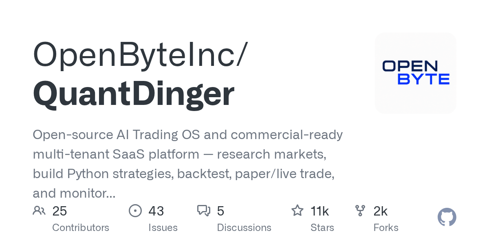

05 GitHub · openbyteinc 최근 활동 2026.09.04
트레이딩 서비스 운영판까지 묶은 AI 플랫폼
스타 11,361 · 이번 주 +0 · Python · Apache-2.0 사내 사용 가능 · 최근 릴리스 v5.0.26 (09.03) · 테스트 없음 · 예제 없음 · AGENTS.md 없음

AI를 붙인 트레이딩 도구는 많다. 하지만 실거래 운영까지 염두에 둔 제품은 요구사항이 다르다. 계정 관리와 작업 분리, 감사 기록, 장애 대응이 빠지면 서비스형 운영이 어렵다. QuantDinger는 이런 운영 요소를 한 저장소 안에 묶어 보여준다.
무엇을 하는 물건인가
QuantDinger는 AI 기반 트레이딩 서비스를 직접 운영하려는 팀을 위한 오픈소스 플랫폼이다. 시장 조사와 전략 작성, 백테스트, 모의투자, 실거래, 모니터링을 한 흐름으로 묶는다. 증권사나 거래소 연결만 붙이는 보조 도구보다 범위가 넓다. 매매 데스크를 여는 데 필요한 운영판을 한 번에 깔아두는 느낌에 가깝다.
스펙과 도입 조건
- 언어는 Python이다.
- 최신 릴리스는 v5.0.26이다.
- Docker 이미지를 제공한다. 멀티 아키텍처로 amd64와 arm64를 지원한다.
- PostgreSQL 기반 상태 저장소를 쓴다.
- Redis는 캐시용과 영속 작업용을 분리해 쓴다.
- Celery 작업 프로세스에 의존한다.
- 라이선스는 Apache-2.0이다.
이럴 때 쓰면 좋다
- 디지털 자산 부서가 새 전략을 실거래 전에 모의투자로 검증하려고 할 때 맞다.
- 사내 퀀트팀이 Python 전략을 여러 계정과 시장에 나눠 운영하려고 할 때 쓸 수 있다.
- 외부 고객용 투자 서비스의 사용자 관리와 과금, 정산까지 한 플랫폼에서 처리하려는 팀에 맞다.
핵심 기능
- 여러 AI 제공자의 시장 조사와 분석 기능을 붙일 수 있다.
- Python 지표와 Strategy API V2로 전략을 개발하고 서버에서 백테스트를 돌릴 수 있다.
- 웹과 모바일 H5, Human API, Agent Gateway, MCP로 접근 경로를 넓힐 수 있다.
이번 릴리스에서 바뀐 점
v5 계열은 실행 경계를 더 분명하게 나눴다. HTTP API는 오래 도는 거래 루프와 스케줄러를 맡지 않는다. 거래 실행과 스케줄링, Celery 작업, 마이그레이션은 각자 다른 프로세스로 분리했다. 캐시 Redis와 영속 작업 Redis도 인스턴스와 제거 정책을 갈랐다.
운영 안전장치도 늘렸다. 고위험 API 계약은 OpenAPI로 표현하고 테스트로 보호한다. JSON 로그와 요청 ID, Prometheus 지표, 대시보드, 경보 규칙은 선택형 관측성 오버레이로 제공한다. 운영용 오버레이는 비루트 사용자, 읽기 전용 루트 파일시스템, 권한 축소, 자원 제한을 적용한다.
이번 공개된 릴리스 노트 v5.0.26에는 멀티 아키텍처 Docker 이미지 제공과 버전 고정 안내가 담겼다. 세부 변경 내역은 v5.0.25와 v5.0.26 비교 링크로만 연결돼 있어, 실제 업그레이드 영향은 배포 전에 추가 확인이 필요하다.
사내 도입 체크
- 실거래는 사용자가 명시적으로 켜야 한다. 먼저 모의투자를 쓰고 제한된 API 키를 쓰라고 안내한다.
- 거래소·브로커 자격 증명과 시장 데이터, 전략 코드는 운영자가 직접 관리하는 구조다. 데이터 반출 범위는 배포 구성별로 확인이 필요하다.
- 유지보수 주체는 OpenByteInc로 보이지만, 개인 프로젝트인지 조직 운영 체계인지 추가 확인이 필요하다.
- 상용 대체재는 많지만, 사용자 관리와 과금, 정산까지 함께 담은 오픈소스 대안은 드물다.
주요 용어
원문 정보
제목: OpenByteInc/QuantDinger
최근 활동: 2026.09.04